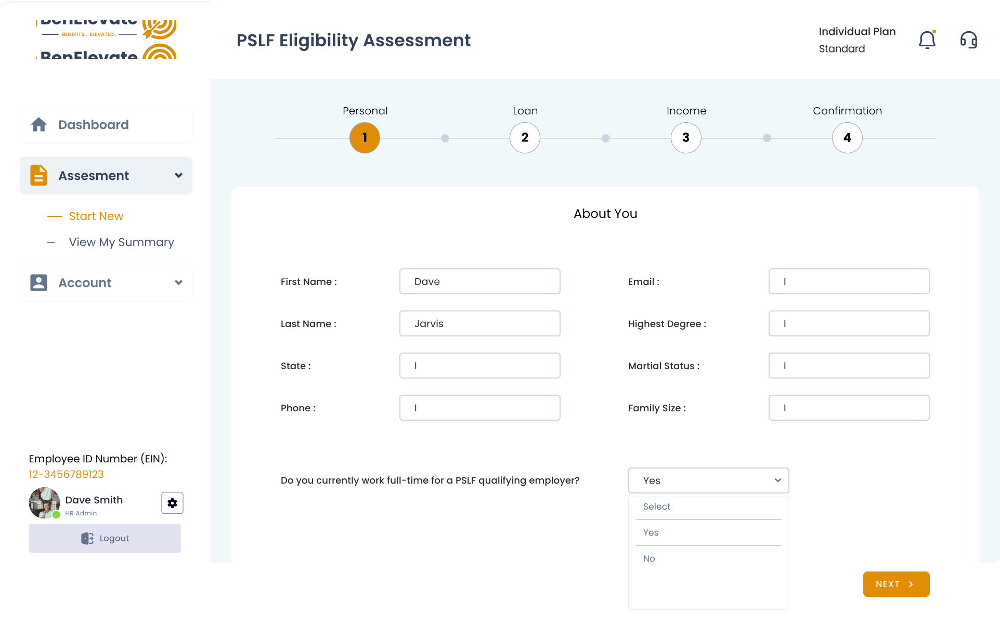

a BenElevate product
PSLF jobs
This is a live and running website, offering subscription-based PSLF Eligibility Assessment to Enterprise and Individual borrowers.

a BenElevate product
This is a live and running website, offering subscription-based PSLF Eligibility Assessment to Enterprise and Individual borrowers.


PSLFjobs.com is a live and running website, offering subscription-based PSLF
Eligibility Assessment to Enterprise and
Individual borrowers.
PSLF stands for Public Service Loan Forgiveness
The main goal of this platform is to provide PSLF support for all the eligible candidates who
are working in either a
Government Organization or a Non-Profit Organization based on a
monthly or yearly subscription
UI / UX Strategy and Design (Main Dashboards)
This project has 3 major types of Users who has dashboards